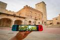
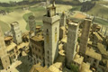
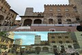
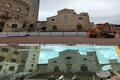
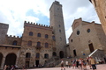
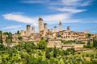
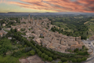
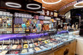

Multimédia
Nesta página encontra conteúdos multimédia sobre San Gimignano.
Vídeo
Vê este vídeo com uma vista panorâmica em drone da cidade de San Gimignano:
Fotografias








Poesia
Torres de pedra a tocar o céu,
Guardam memórias de um tempo antigo,
Onde o sol veste o morro num véu,
E a Toscana encontra o seu abrigo.
Pelas vielas de pedra e história,
Ezio saltou sob o luar da cidade,
San Gimignano gravou na memória,
Orgulho, encanto e eternidade.
Cidade das torres sem fim.